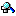

Components for NC tool
NC tools are assembled from the Spindle, Holder, Extension and Tool components in the data view of the overview window.
To use components in the assembly:
-
Click the component or the icon in the data view of the Geometry area.
-
 Select a spindle/a holder.
-
 Select an extension.
Select an extension. -
Select a tool.
-
Confirm the selection with OK .
When assembling an NC tool, the following conditions apply:
-
The measurement system of the selected tool determines the measurement system of the NC tool.
-
All installed components must have the same measurement system.
Note
If you assign a holder, extension or tool to an NC tool, only those components that can actually be installed at the appropriate place are displayed in the relevant selection dialogs.
To connect components with each other, you use couplings that can be categorized in the tool database according to different basic types and can be installed according to classes.
The coupling types used and the size of each coupling (length, diameter) determine which components are assembled together to form an NC tool.
If you use the holder or extension component when assembling an NC tool, hyperMILL also checks the maximum spindle RPM of the components and takes the lowest value for the NC tool.
Example
|
Holder |
10.000 |
|
Extension |
7.500 |
|
Tool |
15.000 |
|
NC tool |
7.500 |
To assign internal cooling to a component (holder, extension, tool holder), select the → option in the Technology area. If the coolant type for a Tool / NC tool is set to Internal cooling, all components of the Tool / NC-Tool must also to be set to internal cooling.
The parameters on the tabs Geometry, Technology and Cutting point setup of the NC tool are described in the following sections.